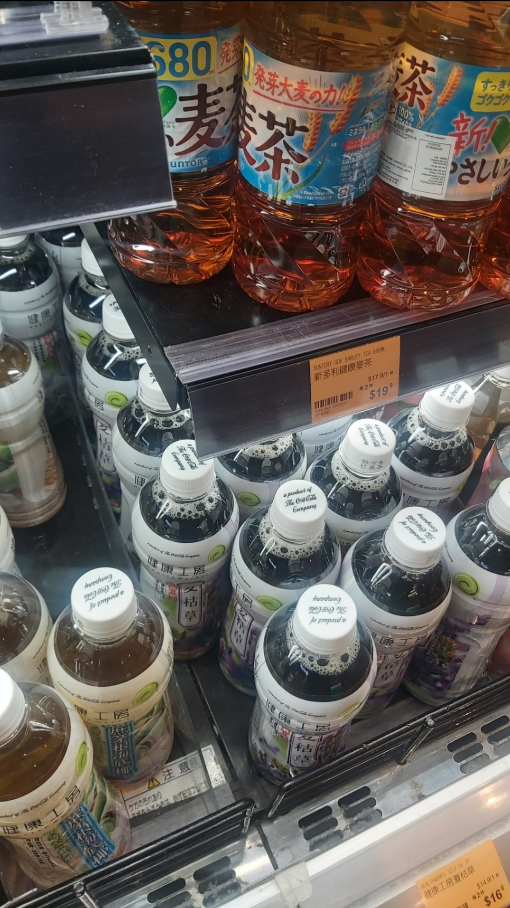

Identify the exact SKU
Brand, product, variant, and pack size distinguish one SKU from another. A product catalogue with reference images helps define the expected range.
Identify visible products, count facings, and measure your brand’s shelf presence. Keep every observation connected to the evidence your team can review.
Watch the shelf walkthrough ↓A shelf intelligence analysis connects visible product identities, facing counts, and brand share of shelf to the shelf evidence. Aislemetry uses AI to support product detection and catalogue matching, with uncertain identities available for review. The walkthrough below uses a real supermarket photograph with five manually annotated packs to explain these outputs. It does not perform live AI recognition or report a full-category audit.
Follow five selected packs in a real supermarket photograph. The animation reveals manually placed annotations to explain the workflow. It is an educational example, not live AI inference or a customer performance result.

Photo: Waydwaid / Wikimedia Commons · CC0 1.0. Original photograph unchanged; Aislemetry added the manual annotation layer. Product brands and photographer do not endorse Aislemetry.
Five selected packs give us one manually identified SKU and two product groups to review. Suntory accounts for three of the five selected packs. This sample is not a full-category shelf audit.
The scope matters. Only the five outlined packs are included. Other visible bottles, hidden stock, and unmarked edge packs are outside this teaching sample. The percentages describe this selection, not the whole shelf or market.
This static table stays readable without animation or JavaScript. Brand and pack readings are manual; the two Healthworks records require catalogue review before assigning exact SKUs.
| Observed product group | Selected facings | Identity status |
|---|---|---|
| Suntory barley tea · 680 ml | 3 | Manually identified SKU |
| Healthworks amber drink | 1 | Exact variant and size need review |
| Healthworks dark drink | 1 | Exact variant and size need review |
| Total selected sample | 5 | 1 identified SKU + 2 review groups |
For a validated Aislemetry result, use a reference catalogue and independently labelled photos, then measure facing-count accuracy, exact SKU matching, and review rate. This walkthrough makes no accuracy claim.
Brand, product, variant, and pack size distinguish one SKU from another. A product catalogue with reference images helps define the expected range.
Four identical packs side by side are one unique SKU and four facings. A different variant or pack size is a separate SKU.
Small packs, blur, glare, and occlusion can make identity ambiguous. Keep uncertain products visible for review rather than treating every match as confirmed.
No. This walkthrough uses a real supermarket photograph and five manually annotated packs. It animates the explanation of a shelf-analysis workflow. It does not upload photos, perform live image recognition, or report measured AI accuracy.
The three selected Suntory bottles are manually grouped as one 680 ml barley-tea SKU using the packaging and shelf label. The two selected Healthworks drinks each need exact variant and size confirmation. They remain review groups and are excluded from the identified SKU count.
Keep uncertain identities flagged for review and check the photo against the reference catalogue. Do not add an unresolved group to the confirmed SKU count. Keep its visible facings in the category total, and review brand shares before treating them as final.
Bring a representative sample of shelf photos and a reference SKU catalogue. Define success for exact SKU identification, facing counts, and the proportion requiring review—including a separate check for small packs.
Email us to discuss a pilot ↗, or build a brief to copy and share.
This creates a brief in your browser. It does not send an enquiry or upload files.Content reviewed · Aislemetry